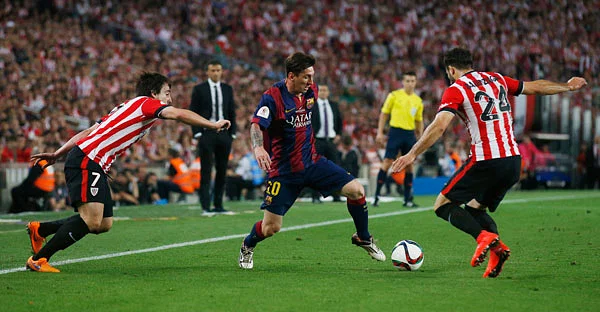

আপডেট: ৩১ মে ২০১৫, ১৪: ৪৯
‘এটা কোনো সাধারণ গোল নয়, এই গোলের জন্ম অন্য গ্রহে’—বিলবাওয়ের বিপক্ষে লিওনেল মেসির গোলটিকে ঠিক এভাবেই চিহ্নিত করেছেন বার্সেলোনা কোচ লুইস এনরিকে।
খেলার ২০ মিনিটে ডান প্রান্তে বল পেয়ে চারজন বিলবাও খেলোয়াড়কে ফাঁকি দিয়ে মেসির করা অবিস্মরণীয় এই গোলটিকে অনেকেই ইতিহাসের অন্যতম সেরা গোলের মর্যাদাও দিচ্ছেন। বার্সেলোনা সভাপতি হোসে মরিয়া বার্তেমেউ তাঁদের একজন। ম্যাচ শেষে টিভি সাক্ষাৎকারে বার্তেমেউ বলেছেন, ‘বিলবাওয়ের বিপক্ষে মেসির যে গোলটি দেখলাম, সেটি ফুটবল ইতিহাসেরই অন্যতম সেরা গোল হিসেবে চিহ্নিত হবে।’ মেসির কোচ হয়ে নিজেকে ভাগ্যবানই মনে করেন এনরিকে। কেবল তা-ই নয়, তিনি নিজেকে সৌভাগ্যবান মনে করেন, মেসির জাদুকরী ক্ষমতা প্রতিদিন অনুশীলনের সময় সরাসরি দেখতে পেয়ে, ‘এ ধরনের অনেক কিছুই মেসি অনুশীলনের সময় করে। আমরা বার্সেলোনার লোকজন এ ব্যাপারে নিজেদের খুব সৌভাগ্যবান মনে করি।’ এর পরপরই কোচ হওয়ার ‘যন্ত্রণা’র কথা বলেছেন এনরিকে। কোচ হওয়ার ‘জ্বালা’ আর কিছুই নয়, বিলবাওয়ের বিপক্ষে মেসির এই ‘অন্য গ্রহে’র গোলটি সরাসরি টেলিভিশনে আয়েশ করে দেখতে না পেরে। মাঠে তো আর রিপ্লে দেখার সুযোগ নেই!
মেসির সেই গোলটির মুহূর্ত মাঠ থেকে দেখতে হয়েছে বলে ‘আক্ষেপ’ এনরিকের! ছবি: রয়টার্স
সংবাদ সম্মেলনেই এনরিকে জানিয়ে দিলেন, তিনি অপেক্ষায় আছেন কতক্ষণে মেসির এই গোলটির ফুটেজ টেলিভিশনে দেখবেন, ‘আমি সত্যিই অপেক্ষায় আছি। আমার তর সইছে না। ডাগ আউটে থাকার কারণে গোলের পুরো সৌন্দর্য উপভোগ করতে পারিনি।’ মেসির এই অসাধারণ গোলটির পর বার্সেলোনার সাবেক সভাপতি হুয়ান লাপোর্তা টুইটারে লিখেছেন, ‘মেসি এই গ্রহের সবচেয়ে সেরা ফুটবলার। মেসির উপস্থিতিই বার্সেলোনার বর্তমান দলটিকে কিংবদন্তিতুল্য খ্যাতি এনে দিয়েছে।’ সাবেক ইংলিশ ফুটবল তারকা গ্যারি লিনেকার মজা করে টুইট করেছেন, ‘মাত্রই মেসির গোলটি দেখলাম। একেবারেই হাস্যকর!’ ডেভিড বেকহাম টুইট করেছেন, ‘ওয়াও, মেসি জাদু!’